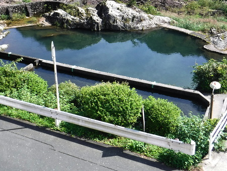
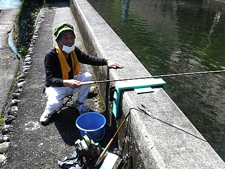
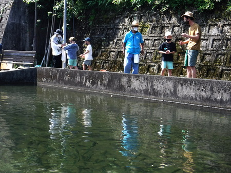
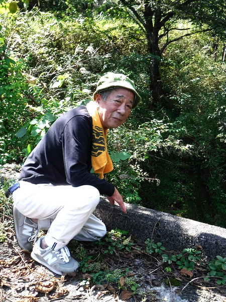
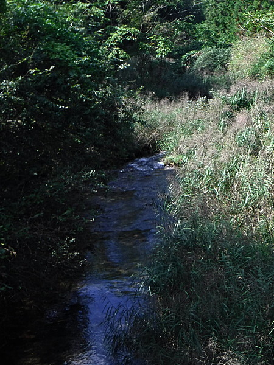
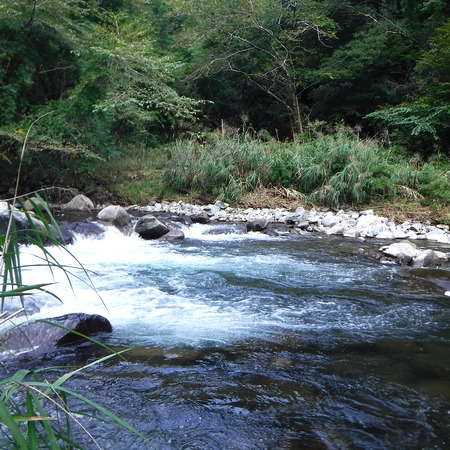

釣行日誌 故郷編
2021/09/25 叔父と釣り堀、そしてドライブ
毎週のごとく高原の川まで長駆遠征していたＹ叔父が、今年の春にギックリ腰をやらかしてリタイア中なので、今日はその兄、Ｓ叔父を誘い出した。彼も大病の手術のリハビリ中で、おまけに週３回は透析に通っている身なのである。週３回もベッドに４時間近く縛り付けられていては、体力も落ちるし、さぞかし退屈だろうと、件の釣り堀に行こうという算段である。
早起きしてバタバタと支度をしていると、沖縄に住んでいる従姉妹のＴちゃんから電話がかかって来た。今朝はこれからＳ叔父と釣りに行くことを告げると、
「なんであんたん達の兄弟やら親戚は、みんなして釣りキチなんかねぇ？」
と聞かれる。
「そんなこと言ったって、Ｔちゃんの兄貴だって釣り好きじゃん。」
言い返す。
レンタカーを朝 7:30 に借り出し、のんびりドライブして、9:30 に釣り堀着。お客さんは誰もいない。（笑）
まだ釣り堀のオープンまでにはしばし時間があるので、秋晴れの空と川を眺めつつ、ロビーにて休息。ところが、いつもの釣り池にニジマスがぜんぜん見えない。カワウ避けのネットも張られていない。
『あれれ？ 魚、居ないじゃん.....。どうしたのかな？』

叔父が、コーヒーを飲みたいと言ったので、車まで魔法瓶を取りに行く。すると駐車場の向こうから、いかにも歴戦の猛者、という風体をした、謎のクーラーボックスおじさんが登場した。両手には何やら木製の道具をいくつも抱えている。
『あのおじさんは、常連さんなのかな.....？』
ロビーに戻って下のようすを再び眺めていると、そのおじさんが、上の段に２つ並んだ養魚池のコンクリート壁に何かを据え付けている。はて？
ともあれ、２人分の受付を済ませ、バケツ１個だけ借りてから、急な階段を、叔父の手を取って慎重に釣り池まで降りる。
奥まった池で、巨大な錦鯉を観察して、あまりの巨体に驚かされる。
いつもの釣り池の方に歩いて行くと、例のおじさんに、
「今はまだ水温が高くて、下の釣り池ではニジマスがまいっちゃうので、上の養魚池、２つのうちのどちらでもいいから、こっちで釣ってください」
と言われる。
養殖池（イケス）は、下の釣り池とは少し勝手が違い、何と言ってもコンクリート製の四角くて浅い池！
『これじゃ、養鶏場のケージに入っているニワトリを散弾銃で撃つようなものじゃん！』
と、いささか釣趣の欠けてしまうような状況にがっくりきたが、それは甘い見通しだったことが後に判明する。（笑）
ふと、養魚池の仕切り壁を見ると、手製の竿立てが各池に２つずつ据えてある。さっきのクーラーボックスおじさん、すなわちスタッフさんの１人、が据え付けてくれた竿立ては便利そうに見えた。
で。
仕掛けと竿を取り出し、必殺のビーズヘッドソフトハックルを結び、叔父に振り込んでもらう。目印には、シモリウキ・オレンジ色のごく小さなタイプを２個付けてある。

何と言っても、ニジマスたちが肩をぶつけながら泳いでいるだけあって、振り込むたびにアタリがあり、浮いているシモリウキに派手にライズするヤツまでいる。シモリウキ２つが沈むと、それめがけて２、３匹のニジマスが突進するのだ。（笑）
しかし、何が何が。ここ３ヶ月ほど、夏場は大勢の家族連れからさんざんいじめられているニジマスたちは超シビア！
歴戦の強者である叔父も、合わせがほんの一瞬遅れ、すぐにニジマスがフライを吐き出すのでなかなか釣り上げられない。おまけに白内障も患っている、満身創痍の叔父は小さなシモリウキが見にくいようだ。そこで、シモリウキをやや大きめの黄色＋オレンジ色のフライフィッシング用インジケーターに変え、黒いピーコックハールボディのビーズ付き、マラブーテールニンフに変更。
新しく自作した「手よりテーパーライン」は、重いニンフとインジケーターを付けていても楽々キャストできる。しだいに家族連れも増えてきた。
あちこちで歓声が上がり、微笑ましい風景である。いつ見ても、釣りをしている子供はシアワセである。

叔父が３匹釣ったところで、テンカラ竿を MaxCatch の11ft から、年代物のつるや釣具店謹製「蒼石」に替え、よりしなやかな感覚を味わってもらう。
「おお、こりゃ釣り味が良いな」
１時間足らずで、叔父が竿２本分の規定匹数６尾を釣り上げてしまった。最後に一振り、釣らせてもらう。残り物にはなんとやらで、今日１番の大物、25cm クラスが掛かり、良く引いた。バケツに入れたニジマスは、すかさずナイフで眼の後ろを突き、とどめを刺しておいた。こうすると味が落ちないのである。
11:00 には勝負が付いたので、ドライブがてら川へ下見に行こうという相談がまとまる。（笑） 受付に戻って計量してもらうと、超過料金は発生しておらず、安堵のため息が漏れる。
カウンターに置いてあった大きな栗を土産に５００円で２袋購入した。
よもやま話をしながらドライブして、叔父が50cmクラスのイワナ（自称）を釣り上げたポイントを確認するとともに、そこまでへのアプローチを伝授してもらうことにして、車を走らせる。
ちょうど 13:00 頃に到着し、眺めの良い橋詰めで、お弁当とする。叔父はこのところ、食欲が出てきたようで、よく食べた。安心安心。
「俺があいつを釣った時はなぁ、あそこの小道から休耕田を匍匐前進して川っぷちまで行って、それから静かぁに竿を出したんだぞ。」

『ああ、こないだのアプローチは下手だったな。いくら条件が良くても、こんな小沢で釣り下っては、イワナに気取られたのだろう.....』

前回このポイントをルアーで攻めたのだが、まったく音沙汰が無かったのだ。
いろいろなポイント、支流の区間を見て回り、いい川だけど、あんまり釣れんなぁと言う結論に至る。（笑）
いつものポイントをテンカラで攻めるべく、叔父に１時間だけ待っていてもらう。こんなこともあろうかと、村の雑貨店で入漁券を買ってきて正解だった。
小型のチェストバッグとテンカラ竿、ネットを持って、スニーカーで川原へと降りる。大淵を眺めながら、仕掛けを伸ばし、良く浮いて見える、エルクヘア・カディスを結ぶ。
スニーカーでの川歩き、渓流釣りは、アプローチの良い勉強になる。濡れたくないので、ウェーダーを履いている時のように、やたらジャバジャバと水に入ることが無いのだ。
水温は約18℃。まずまずよろしいか。

お得意のポイント２カ所をしつこく攻めてみるが、水面は炸裂せず、沈黙を保っていた。
あまり叔父を待たせても気の毒なので、その時点で引き返す。ふと見上げると、上の林道のガードレール越しに、小柄な叔父がうらやましそうに僕の釣り姿を見下ろしていた。（笑）
帰りがけに、故郷の実家（今は他の人が住んでいる）に車を向け、隣家の98歳になるおばあちゃんと歓談した。今日もいろいろとお土産をいただく。
御利益のある峠のお地蔵様を拝んでから帰宅。叔父の仕事仲間のIさん宅にニジマスをお届けして、喜ばれた。
釣行日誌 故郷編 目次へ
サイトマップ
ホームへ
お問い合わせ